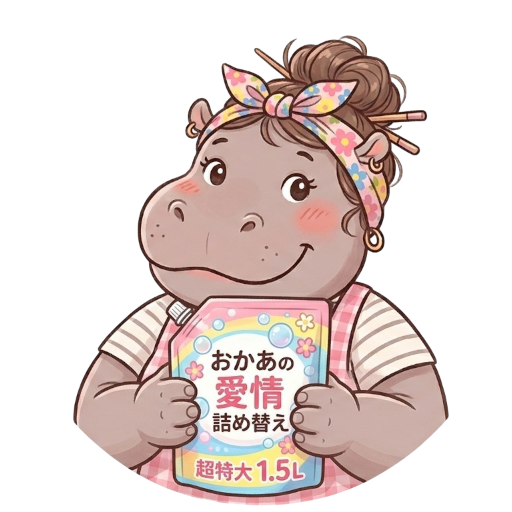
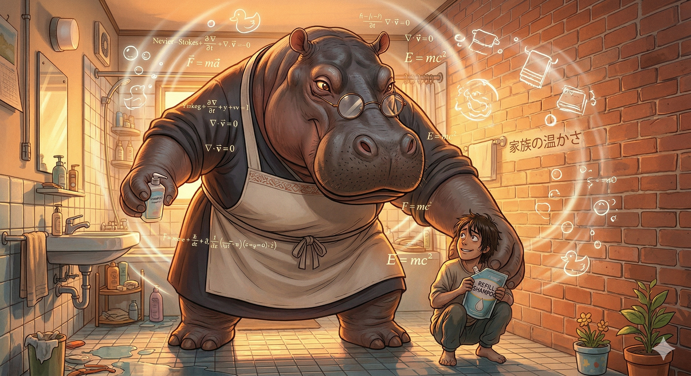
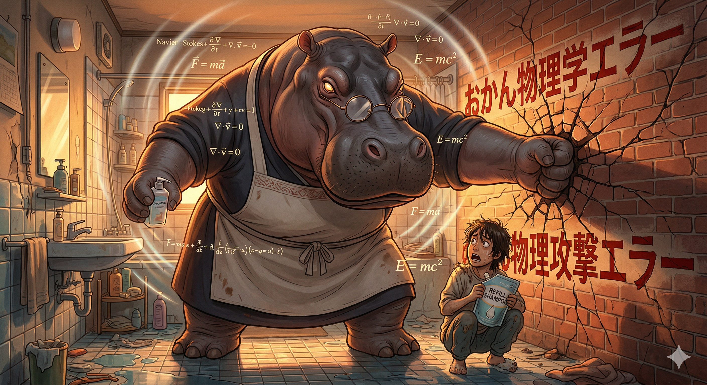

TACTICAL REFILL SYSTEM v3.1
極めろ！表面張力！
〜詰め替え無双〜

⚠ X日ぶり！腕は落ちていないか？
CURRENT RANK
見習い
0 wins
GHOST DATA
NO GHOST DATA
🎮 TRAINING
📷 AR MODE
📊 HISTORY
◀ BACK
MEDIAPIPE: LOADING...
TILT β/γ
0.0°
0.0°
🔓 ENABLE SENSORS
⚡ ENGAGE
TIME
00:00
GHOST
--
⚠ SURFACE TENSION MODE ⚠
揺らすな — HOLD STILL
Lv1
TONER
Lv2
SOAP
Lv3
COND.
💧
HOLD
◀
PERFECT REFILL!

SESSION STATS
TIME
--
SPILLS
--
RANK
--
GHOST
--
▶ PLAY AGAIN
🏠 HOME

こぼれた。
もう一度集中しろ。
CAUSE OF FAILURE
OVERFLOW
↺ RETRY
🏠 HOME
SESSION HISTORY
TOTAL WINS
0
BEST TIME
--
RANK
--
SESSIONS
0
◀ BACK